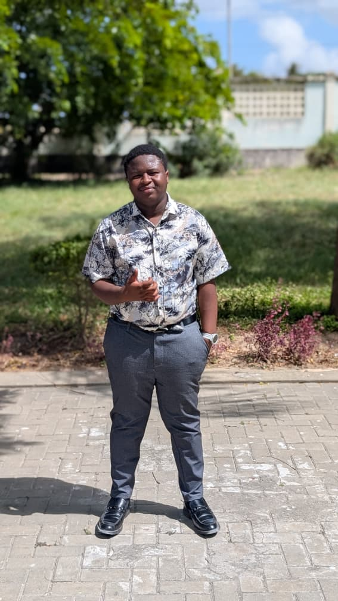

Hello! My name is Justine Boniface Mwala, I am a Computer Science student currently Studying in the University of in Dar es Salaam.My professional roadmap is heavily focused on mastering software development and networking, with the goal of transitioning into the cybersecurity field.
I like solving complex technical challenges, examples including object-oriented programming and other computer related stuffs. My journey in computing started with basic web pages and grew into exploring databases, backend development, and understanding how the internet works at a deeper level. I am particularly interested in how technology can improve everyday life for people across East Africa and beyond.
Outside of studies, I enjoy reading, experimenting with new programming tools, and sharing knowledge with fellow learners. I believe that education and technology together can open many doors for the better good of the next generation of technology enthusiasts like me.
| Educational Level | School | Years |
|---|---|---|
| BSc in Computer Science | University Of Dar es Salaam | 2025-Present |
| Advanced Secondary Education | Ileje Secondary School | 2023-2025 |
| Ordinary Secondary Education | Mzumbe Secondary School | 2019-2022 |
| Primary School Education | Ilasi English Medium School | 2011-2018 |
These are some of my images

Back to top
Contact: justinemwala0069@gmail.com | Dar es Salaam, Tanzania
© 2025 Justine. All rights reserved.